Coordinate based co-localization
Co-localization is used to measure spatial overlap between two (or more) different fluorescent labels, each having a separate emission wavelength. Traditional co-localization analysis of conventional, dual-color fluorescence microscopy images suffers from a limited spatial resolution and chromatic errors [2]. Coordinate based co-localization (CBC) of dual-color super-resolution images provides much better approach as it allows to determine co-localization on a molecular level, it overcomes the dynamic range of a camera, and it is not sensitive to cross talks [1].
Calculation of the CBC value around a given molecule 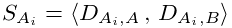, according to [1], starts by determining two distributions of distances
| 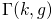 | 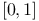 | |||
| 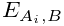 | 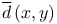 |
Here 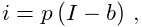, resp. 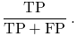,
is the number of localized molecules in channel 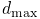, resp. 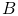,
within the distance 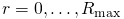 around .
These distributions are corrected for the area given by  and normalized
by the number of localizations within the largest observed distance
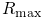.
and normalized
by the number of localizations within the largest observed distance
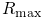.
Having these two distributions of distances, Sperman’s rank correlation coefficient is calculated. The co-localization value is determined for every single molecule according to
| 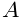 |
where 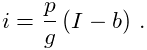 is a distance from localization to the nearest neighbor localization in channel .
In ThunderSTORM, the input data for channels and are provided as a table of results and a ground-truth table, respectively. Computed values with the co-localization coefficient 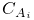, with the distance to the nearest neighbor , and with the number of neighbors within the radius , are displayed in the table of results as new columns.
References
- [1] (2012-01) Coordinate-based colocalization analysis of single-molecule localization microscopy data. Histochemistry and Cell Biology 137 (1), pp. 1–10. Note: Springer-Verlag External Links: Document Cited by: Coordinate based co-localization, Coordinate based co-localization.
- [2] (2008-05) Spatial quantitative analysis of fluorescently labeled nuclear structures: problems, methods, pitfalls. Chromosome Research 16 (3), pp. 523–562. Note: Springer Netherlands External Links: Document Cited by: Coordinate based co-localization.
![[LOGO]]()